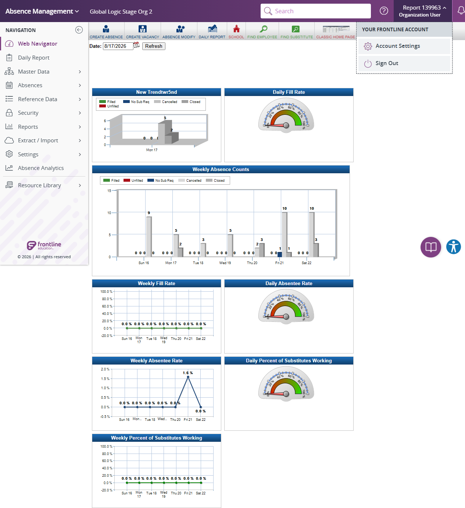

Execution 8 · React Home Role Switcher
tests/navigation/react-home-page-to-role-switcher-dropdown.md · Video 9:00–9:26
Scenario outcome
The role-switcher menu opened and dismissed reliably, but Your Roles and the required Campus User, Employee, and Substitute entries were absent; only Account Settings and Sign Out were shown.
Failed scenario and steps to reproduce
- Open React Home.
- Select the Report 139963 / Organization User profile control.
- Observe the menu: Your Roles is absent and the three expected switchable roles are not displayed.
Expected: Assigned Campus User, Employee, and Substitute roles are visible and selectable.
Actual: The role-switcher menu opened and dismissed reliably, but Your Roles and the required Campus User, Employee, and Substitute entries were absent; only Account Settings and Sign Out were shown.
Continuous video evidence
Screenshot evidence
{kind=link}

Complete test structure
Source: tests/navigation/react-home-page-to-role-switcher-dropdown.md
# Home Page to Role Switcher Dropdown Validation — AES Stage
## Execution directive
Before any browser action, read completely:
1. `instructions/project-instructions.md`
2. `instructions/application-details.md`
3. `instructions/test-data.md`
Execute this scenario directly in Chrome using Playwright MCP. Do not generate Playwright or TypeScript code. Run unattended without pausing for password entry or routine confirmation. Save both Markdown and standalone HTML execution reports under `reports/`.
## Objective
Log in to AES Stage, open the profile role switcher, switch among the assigned Campus User, Employee, and Substitute roles, and validate positive, negative, and edge-case behavior without creating or modifying any record.
## Preconditions and safety
- Playwright MCP is available.
- Work only on AES Stage at `https://aesstage.flqa.net`; the authentication redirect to `https://idgatewayawsstage.flqa.net` or `https://adminwebstage2.flqa.net` or `https://aesempstage.flqa.net` or `https://aessubstage.flqa.net/` are approved.
- For this scenario, the environment-variable rules above replace the manual-password-entry instruction in `instructions/test-data.md`.
- Do not record, display, repeat, or screenshot the password.
- If validation requires a save attempt, use incomplete or intentionally invalid data so creation cannot succeed.
- During authentication, `idgatewayawsstage.flqa.net` is an approved login host. After authentication, continue only in the AES Stage application.
- For this scenario, the approved authentication redirect above is the explicit exception to the general different-host stop rule in the shared instructions.
## Steps
### 1. Launch and authenticate
1. Read the Stage URL and `username` from `config/aes-stage.json`.
2. Use `AES_STAGE_PASSWORD` when the environment variable is configured.
3. Otherwise, read `password` from `.secrets/aes-stage.credentials.json`.
4. If neither password source is available or the local value is still a placeholder, mark all flows **BLOCKED**, generate the HTML report, and stop before opening the browser.
### 2. Open the role switcher and switch roles
5. Navigate through `Profile Icon` on top right of the page.
- Expected: It shows the lists of Roles Present for the logged in User
6. Select the `Campus User` (Campus User) Role from Profile Icon
- Expected: Application will reload and launch campus user profile
7. Select the `Employee (Employee)` Role from Profile Icon
- Expected: Application will reload and launch Employee profile
8. Select the `Substitute` Role from Profile Icon
- Expected: Application will reload and launch Substitute profile
### 3. Positive validation
9. After each successful role selection, verify the profile control displays the selected role and the corresponding role home page is responsive.
- Expected: `Campus User (Campus User)`, `Employee (Employee)`, and `Substitute` each appear as the active role after their respective reload, with no unhandled application error.
10. Reopen the profile control after a successful role switch and inspect `Your Roles`.
- Expected: The switcher displays exactly the assigned roles `Organization User (Org User)`, `Campus User (Campus User)`, `Employee (Employee)`, and `Substitute`, and the active role matches the profile control.
### 4. Negative validation
11. Open the role switcher, select the profile control again to dismiss it, and verify that closing the menu does not change the active role.
- Expected: The menu closes, the current role remains unchanged, and no navigation or application error occurs.
12. Inspect the available role entries for an unassigned or unknown role without attempting to manipulate the page or construct a direct role-switch URL.
- Expected: No role outside the four assigned roles is displayed or selectable; no duplicate or blank selectable role entry is present.
### 5. Edge-case validation
13. Select the currently active role once from `Your Roles`.
- Expected: The application remains in that role or reloads it cleanly, with no duplicate navigation, error page, or unintended role change.
14. Refresh the browser once after a successful role switch.
- Expected: The selected role persists, its home page remains responsive, and the role list remains available.
15. Open and dismiss the role switcher twice consecutively without selecting a different role.
- Expected: Each open shows one copy of the same four assigned roles, each dismissal closes the menu, and the active role does not change.
### 6. Final verification and cleanup
16. Confirm the browser is on an approved AES Stage role application after the approved authentication redirect and the current role home page is responsive.
- Expected: No unapproved redirect, unhandled error, or broken layout is present, and the profile control identifies the expected active role.
17. Clear/reset all entered test values or navigate away without saving.
- Expected: No record is created and no cleanup record is required.
## Result classification
- Mark **PASS** only if navigation succeeds and every executed validation behaves as expected.
- Mark **FAIL** for application errors, missing required validation, accepted invalid values that can be safely demonstrated, or unstable UI behavior.
- Mark **BLOCKED** for authentication, permission, environment, unavailable-control, or safety restrictions.
- Mark an individual case **NOT TESTED** when the visible form lacks the relevant control or safely triggering validation is impossible.
## Reporting
Create `reports/navigation/react-home-page-to-role-switcher-dropdown/react-home-page-to-role-switcher-dropdown-<YYYYMMDD-HHMMSS>.html` as a polished standalone report containing scenario totals, detailed results, interaction evidence, accepted zero-result behavior, failures with reproduction steps, route observations, and safety/cleanup status. Create the report directory when it does not exist.
At the top of the report, show separate summary cards for:
- Total flows
- Flows passed
- Flows failed
- Flows blocked
- Detailed checks passed/failed, shown separately from flow totals
Include a visually distinct **Scenario outcomes** section containing one card for each of the four flows. Every card must contain:
1. Flow number and complete flow name
2. A short actual-result summary stating whether the navigation and interaction checks worked
3. A prominent final status: **PASS**, **FAIL**, or **BLOCKED**
Example:
> **1 · React Home Page → Role Switcher Dropdown**
>
> React Home Page to Role Switcher Dropdown for all users controls were interactive; navigation completed.
>
> **PASS**
Determine each flow independently. Mark a flow **PASS** only when all required steps and shared checks used by that flow pass. Mark it **FAIL** when any required step fails, and **BLOCKED** when it cannot be completed safely. The overall report status is **PASS** only when every flow passes. Never include credentials or authentication secrets.
Safety and cleanup
No password, token, cookie, or authentication fragment is included. Unattended safe mode did not create, update, or delete persistent staging records.